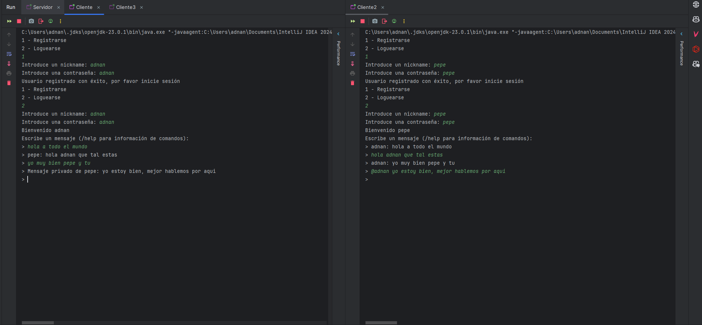
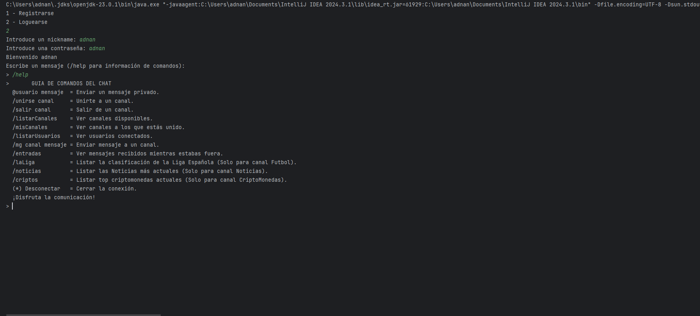
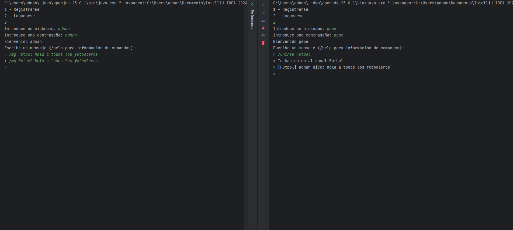
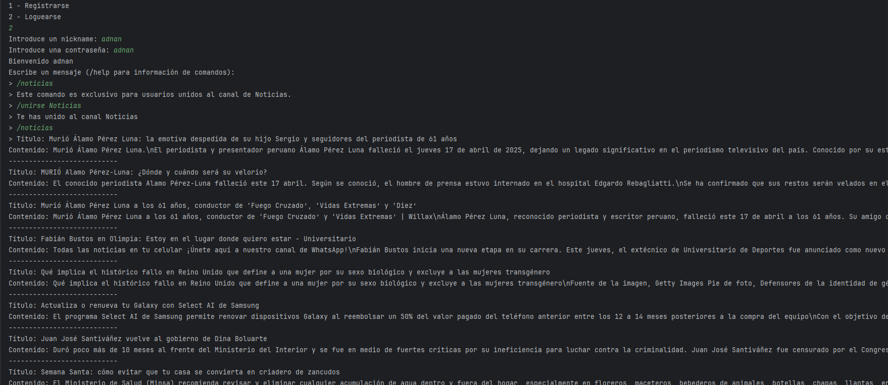
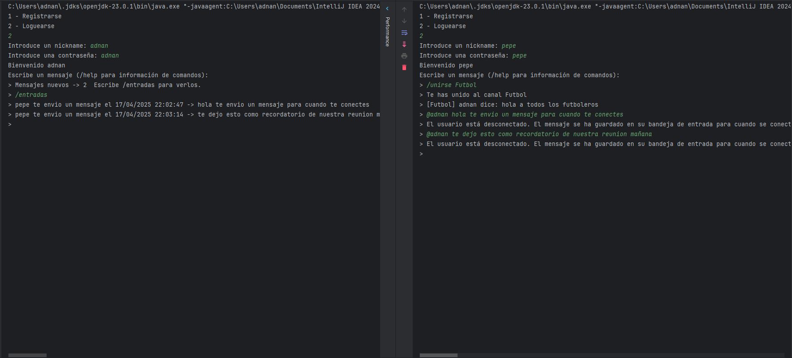

🔊 ChannelCast: Java Real-Time Chat App
ChannelCast es una aplicación de chat en tiempo real construida con Java y sockets que simula un sistema moderno de mensajería con funcionalidades clave:
- 🔐 Registro y login seguro con conexión a base de datos
- 📬 Recepción de mensajes offline
- 🛎️ Canales temáticos para conversaciones organizadas
- 📡 Mensajería en tiempo real mediante Java Sockets
- 🌐 Integración con APIs externas para contenido dinámico





⚙️ Características Técnicas
🖥️ Lenguaje y Frameworks
Desarrollado en Java utilizando Sockets para comunicación en tiempo real y JDBC para la gestión de base de datos.
🔌 Conectividad y Seguridad
Comunicación segura con autenticación y cifrado, permitiendo múltiples conexiones simultáneas y garantizando la privacidad de los mensajes.
🗄️ Base de Datos
Integración con MySQL para el registro de usuarios y almacenamiento de mensajes, facilitando el soporte offline.
🌐 Integración de APIs Externas
Conecta con APIs para obtener datos en tiempo real: clasificación deportiva, noticias y criptomonedas, enriqueciendo la experiencia del usuario.
⚙️ Comunicación Multihilo
Cada conexión de cliente se maneja en un hilo independiente, asegurando un intercambio de mensajes fluido y sin bloqueos.
👥 Gestión de Usuarios Offline
Implementa login, registro y seguimiento del estado online/offline, además de almacenar mensajes para usuarios desconectados.
¿Quieres verlo más a fondo?
Para entender en profundidad cómo funciona ChannelCast, haz clic en el botón de YouTube para ver el video explicativo del proyecto o explora el repositorio en GitHub.